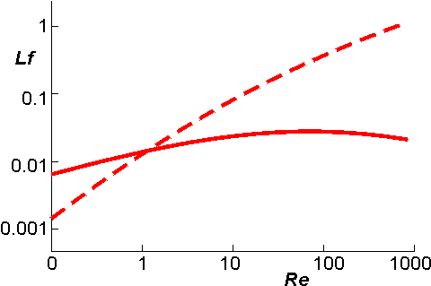

Enzyme Technology
Continuous flow reactors
The advantages of immobilised enzymes as
processing catalysts are most markedly appreciated in continuous flow reactors.
In these, the average residence time of the substrate molecules within the
reactor is far shorter than that of the immobilised-enzyme catalyst. This
results in a far greater productivity from a fixed amount of enzyme than is
achieved in batch processes. It also allows the reactor to handle substrates of
low solubility by permitting the use of large volumes containing low
concentrations of substrate. The constant reaction conditions may be expected to
result in a purer and more reproducible product. There are two extremes of
process kinetics in relation to continuous flow reactors;
-
the ideal
continuous flow stirred tank reactor (CSTR), in which the reacting stream is
completely and rapidly mixed with the whole of the reactor contents and the
enzyme contacts low substrate and high product concentrations;. and
-
the
ideal continuously operated packed bed reactor (PBR), where no mixing takes
place and the enzyme contacts high substrate and low product concentrations.
The
properties of the continuously operated fluidised bed reactor (FBR) lie,
generally, somewhere between these extremes. An ordered series of CSTRs or FBRs
may approximate, in use where the outlet of one reactor forms the inlet to the
next reactor, to an equivalent PBR.
The transport of momentum, heat and mass in
these continuous reactors are important factors contributing to the resultant
productivity. They are due to fluid flow and molecular and turbulent motions,
and often described by means of a number of empirical relationships, involving
dimensionless numbers. The most important of these is the Reynolds number (Re),
which relates the inertial force due to the flow of solution to the viscous
force resisting that flow. Low Re indicates streamlined flow whereas higher
Re indicates progressively more turbulence, there being a critical value for
Re,
dependent on the configuration of the system, at which there is a transition
from streamlined flow to turbulent flow. Re is defined in terms of
Lfm/ h or Lf/n, where L is the characteristic length of the system,
fm is the mass
flow rate (g m−2 s−1), f is the fluid velocity (m
s−1), h is the dynamic
viscosity (g m−1s−1) and n
is the kinematic viscosity (m2 s−1). Examples of the
characteristic lengths in these definitions of Re are the particle diameter for
flow past spherical particles, and the tube diameter for flow within hollow
tubes. The value of the (characteristic length of the system) x (fluid velocity)
for a stirred tank system may be taken as the (stirrer speed) x (stirrer
diameter)2. Re is, therefore, higher at high flow rates and low viscosities.
Another dimensionless number which is of use in describing and comparing
continuous enzyme reactors is the Le Goff number (Lf), which expresses the
efficiency with which the energy dissipated in producing the fluid flow is used
to transport material (and heat) to the catalytic surface. Low values for Lf
indicate a relatively high energetic and financial cost, in achieving contact
between the catalytically active immobilised-enzyme surface and the substrate
stream, and the consequent reduction in any external diffusion limitations. The Lf
is higher for low pressure drops through the reactor, high flow rates and
high conversions. The relationship between the Lf and the Re
is shown
schematically for a PBR and a CSTR in Figure 5.3, where it may be seen that the
PBR is more efficient at fairly low Re but far less so at higher Re, reflecting
the necessity for stirring the CSTR even at low flow rates and the increased
backpressure in PBRs at high flow rates.

Figure 5.3. A diagram comparing the variation
of Re with Lf for a PBR (———)
and a CSTR (-----------). An FBR behaves similarly
to the CSTR.
Home
| Back | Next
This page was established in 2004 and last updated by Martin
Chaplin
on
6 August, 2014
|